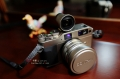

quggy2013-01-18 22:304.42 分
操作性 4.00功能性 4.00美观性 4.50趣味性 4.50耐用性 4.50性价比 5.00

santorini4212012-10-13 10:294.42 分
操作性 4.00功能性 4.50美观性 4.50趣味性 4.50耐用性 4.00性价比 5.00
小农人2010-02-03 02:254.58 分
操作性 4.50功能性 4.00美观性 5.00趣味性 4.50耐用性 4.50性价比 5.00
5zhong2010-01-26 14:384.67 分
操作性 4.00功能性 4.00美观性 5.00趣味性 5.00耐用性 5.00性价比 5.00
william2009-12-29 17:204.67 分
操作性 4.50功能性 4.50美观性 5.00趣味性 4.50耐用性 4.50性价比 5.00
xjvan2009-02-05 12:474.33 分
操作性 4.00功能性 4.00美观性 5.00趣味性 5.00耐用性 4.50性价比 3.50
sakurazaghi2009-01-31 02:344.75 分
操作性 4.50功能性 4.50美观性 5.00趣味性 4.50耐用性 5.00性价比 5.00
篮灰色的莱茵河2008-08-18 11:434.58 分
操作性 4.00功能性 4.50美观性 5.00趣味性 4.50耐用性 4.50性价比 5.00
hunter06182008-06-11 21:365 分
操作性 5.00功能性 5.00美观性 5.00趣味性 5.00耐用性 5.00性价比 5.00
kelong3912008-02-01 18:274.5 分
操作性 4.00功能性 4.00美观性 5.00趣味性 4.50耐用性 5.00性价比 4.50
hjcbq5012008-01-30 19:154.75 分
操作性 4.50功能性 5.00美观性 5.00趣味性 5.00耐用性 5.00性价比 4.00
benandan1392382007-09-05 19:024.5 分
操作性 4.50功能性 4.50美观性 4.50趣味性 4.50耐用性 4.00性价比 5.00
sortic2007-08-15 22:344.67 分
操作性 4.50功能性 4.50美观性 5.00趣味性 4.50耐用性 4.50性价比 5.00
蛮penance2007-07-09 21:294.67 分
操作性 4.00功能性 5.00美观性 4.50趣味性 5.00耐用性 4.50性价比 5.00
钛色旁轴2007-02-27 16:394.17 分
操作性 4.00功能性 4.00美观性 4.50趣味性 4.00耐用性 4.00性价比 4.50
大漠秋风2007-02-26 11:194.58 分
操作性 4.50功能性 4.50美观性 5.00趣味性 4.50耐用性 4.00性价比 5.00
hotcao2007-02-22 11:024.5 分
操作性 4.50功能性 4.50美观性 5.00趣味性 4.00耐用性 4.00性价比 5.00
RichHeaven2006-12-27 11:444.58 分
操作性 4.50功能性 4.50美观性 5.00趣味性 4.00耐用性 4.50性价比 5.00
风的足迹2006-12-26 22:484.25 分
操作性 4.50功能性 5.00美观性 4.00趣味性 4.00耐用性 4.00性价比 4.00
macg4tt2006-12-08 18:252.75 分
操作性 3.50功能性 3.50美观性 3.00趣味性 3.00耐用性 2.00性价比 1.50
nikkor2003-08-02 15:124.42 分
操作性 4.00功能性 4.50美观性 5.00趣味性 4.00耐用性 4.50性价比 4.50
BenBenYa2003-04-28 23:394.5 分
操作性 4.00功能性 4.00美观性 5.00趣味性 4.50耐用性 4.50性价比 5.00
1672003-01-20 17:154.42 分
操作性 4.50功能性 4.50美观性 5.00趣味性 4.00耐用性 4.00性价比 4.50
抱石斋主人2003-01-20 12:484.67 分
操作性 4.50功能性 5.00美观性 5.00趣味性 5.00耐用性 4.00性价比 4.50
阿奔2002-09-02 11:244.58 分
操作性 4.50功能性 4.50美观性 5.00趣味性 5.00耐用性 4.00性价比 4.50
billwing2002-08-12 23:254.75 分
操作性 4.50功能性 4.50美观性 5.00趣味性 4.50耐用性 5.00性价比 5.00
wang06012002-05-04 23:114.67 分
操作性 4.50功能性 4.50美观性 5.00趣味性 4.50耐用性 4.50性价比 5.00
锐2002-04-12 23:014.5 分
操作性 4.00功能性 4.00美观性 5.00趣味性 5.00耐用性 4.00性价比 5.00